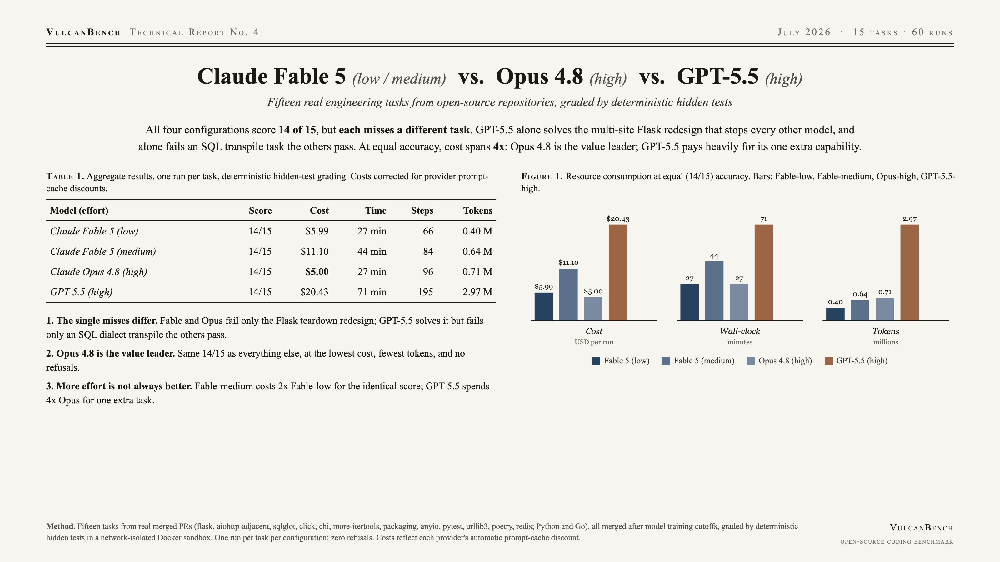
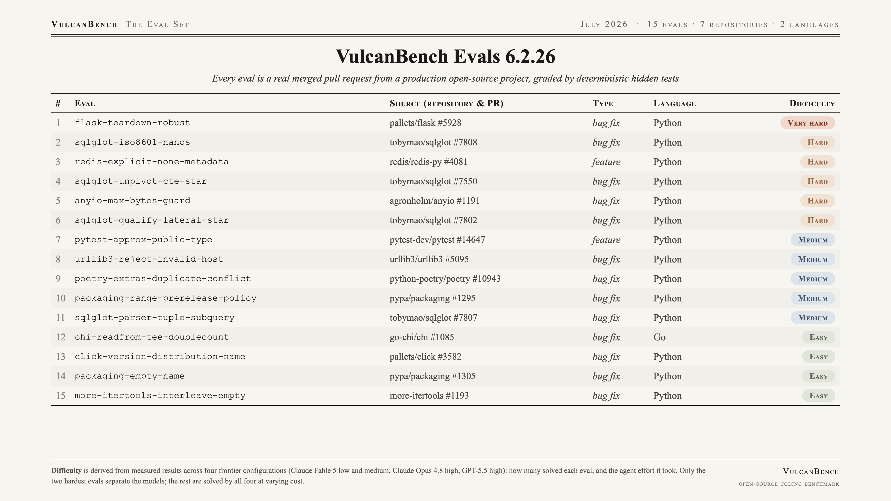

All four configurations score 14 of 15, but each misses a different task. GPT-5.5 alone solves the multi-site Flask teardown redesign that stops every other model, and alone fails a SQL dialect transpile the others pass. At equal accuracy, cost spans 4x: Opus 4.8 is the value leader; GPT-5.5 pays heavily for its one extra capability. Correctness no longer separates these models on ticket-sized work; economics does.

| Model (effort) | Score | Cost | Time | Steps | Tokens |
|---|---|---|---|---|---|
| Claude Fable 5 (low) | 14/15 | $5.99 | 27 min | 66 | 0.40 M |
| Claude Fable 5 (medium) | 14/15 | $11.10 | 44 min | 84 | 0.64 M |
| Claude Opus 4.8 (high) | 14/15 | $5.00 | 27 min | 96 | 0.71 M |
| GPT-5.5 (high) | 14/15 | $20.43 | 71 min | 195 | 2.97 M |
The single misses differ. Fable (both efforts) and Opus fail only flask-teardown-robust, the multi-site redesign that has stopped every Anthropic model to date. GPT-5.5 is the first model to solve it, but is the only one to fail sqlglot-iso8601-nanos, a SQL dialect transpile the others pass easily. The suite now separates these models by what kind of task they miss.
Opus 4.8 is the value leader. The same 14/15 as everything else, at the lowest cost, the fewest tokens, and no reliability issues.
More effort is not always better. Fable-medium cost 2x Fable-low for an identical score. GPT-5.5 spent 4x Opus and used 4x the tokens to buy exactly one extra task, which it offset by losing another.

Fifteen tasks from real merged pull requests (flask, sqlglot, click, chi, more-itertools, packaging, anyio, pytest, urllib3, poetry, redis; Python and Go), all merged after model training cutoffs, graded by deterministic hidden tests in a network-isolated Docker sandbox. One run per task per configuration.
Two corrections make this run trustworthy relative to an earlier draft: the harness now folds OpenAI's automatic prompt-cache discount into cost (GPT-5.5's true total is $20.43, not the ~6x figure a naive token count implies), and two tasks a safety classifier had intermittently refused were replaced with equally-hard, reliably-attempted tasks, giving a clean 15 for every model with zero refusals.
{kind=link}
{kind=link}